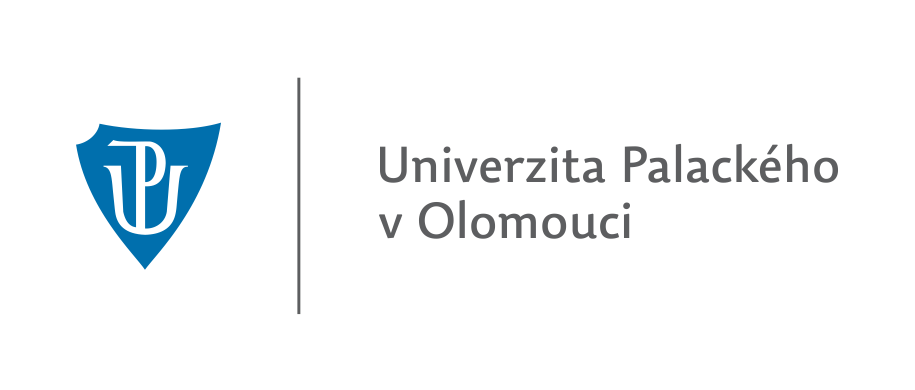
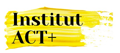

Když je vám těžko
Úzkosti, deprese, panické ataky, OCD a generalizovaná úzkostná porucha.
Možná vás trápí úzkost, dlouhodobé napětí nebo smutek. Ve vztazích se opakují stejné potíže, procházíte náročnou změnou, nebo máte pocit, že jen plníte povinnosti a na sebe už vám nezbývá místo.
V terapii můžeme společně zkoumat, co se ve vašem životě děje, co potřebujete a co by vám pomohlo. Můžete mluvit i o věcech, které se vám s blízkými sdílejí těžko. Budeme hledat souvislosti i konkrétní způsoby, jak zvládat situace, které vás zatěžují.
Nemusíte předem přesně vědět, kde začít. Tématem může být i to, že chcete lépe porozumět sobě, svým emocím nebo vztahům.
Úzkosti, deprese, panické ataky, OCD a generalizovaná úzkostná porucha.
Partnerské a rodinné vztahy, náročné životní situace a zvládání stresu.
Seberozvoj, práce s emocemi a rozvoj emočních kompetencí.
Jsem psycholog a v terapii pracuji s dospívajícími od 15 let i dospělými. Věnuji se psychologickému poradenství, terapii a pedagogické psychologii.
Vystudoval jsem magisterský program psychologie na Univerzitě Palackého v Olomouci. Ve své práci vycházím z přístupu zaměřeného na člověka podle Carla Rogerse a krátkodobé kognitivně-behaviorální terapie.
Působím také jako školní psycholog a terapeut v Plzni. Zkušenosti jsem získával i jako online krizový poradce a pracovní psycholog v mezinárodní firmě.
Snažím se porozumět tomu, jak situaci prožíváte vy. Ověřuji si, zda vám rozumím, a dávám prostor i tomu, co se zatím těžko pojmenovává.
Přístup zaměřený na člověka podle Carla Rogerse, PCA, staví na vztahu, ve kterém můžete otevřeně mluvit o tom, co prožíváte. Vy přinášíte témata, která jsou pro vás důležitá, a společně jim věnujeme pozornost.
Takový rozhovor může pomoci lépe rozpoznat vlastní potřeby a emoce a hledat rozhodnutí, která vám dávají smysl. Důležité je i vaše tempo.
Před náročným rozhovorem vás může napadnout: „Určitě to pokazím.“ Společně můžeme prozkoumat, z čeho tato myšlenka vychází a zda existují i jiné pohledy na situaci.
Krátkodobá kognitivně-behaviorální terapie, k-KBT, se věnuje souvislostem mezi tím, co si myslíme, co cítíme a jak jednáme. Pracujeme s konkrétními situacemi z vašeho života a hledáme, co obtíže udržuje.
Součástí mohou být praktická cvičení a malé kroky, které si vyzkoušíte v běžném životě. Společně pak sledujeme, co vám pomáhá a co potřebuje upravit.
2018–2023

2024–2025
Roční výcvik v krátkodobé kognitivně-behaviorální terapii.

2024–2029 Probíhající výcvik
Poradenství a psychoterapie podle C. R. Rogerse, PCA.
Kateřina Palová
Ceteras
Cena
Po domluvě také online.
Objednání probíhá přes rezervační kalendář. Vyberte si den a čas, který vám vyhovuje.
Vybrat termín v kalendářiPo výběru termínu načtěte QR kód v aplikaci mobilního bankovnictví a odešlete platbu před setkáním.
Do poznámky pro příjemce napište: konzultace, jméno a příjmení, domluvené datum setkání.
Například:
konzultace, Jan Novák, 10. 10. 2026

Vámi vybraný termín je závazně rezervován až po obdržení platby. Objednat se je možné nejpozději 12 hodin před konáním schůzky. Termín můžete zrušit nejpozději 48 hodin před konáním. V takovém případě bude na účet vrácena celá částka. Zrušení sezení méně než 48 hodin předem hradí klient (peníze nebudou vráceny).
Objednáním se a provedením platby souhlasíte s výše uvedeným.
Mgr. Martin Žáček
PsychoterapieZacek@gmail.com604 950 101Palackého 12
301 00 Plzeň
Provozní doba dle rezervačního kalendáře.